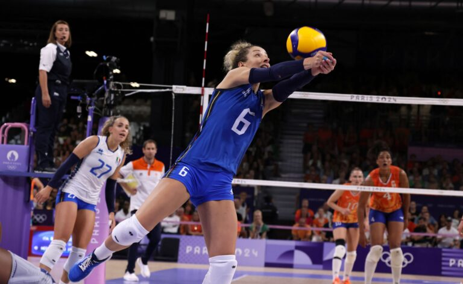
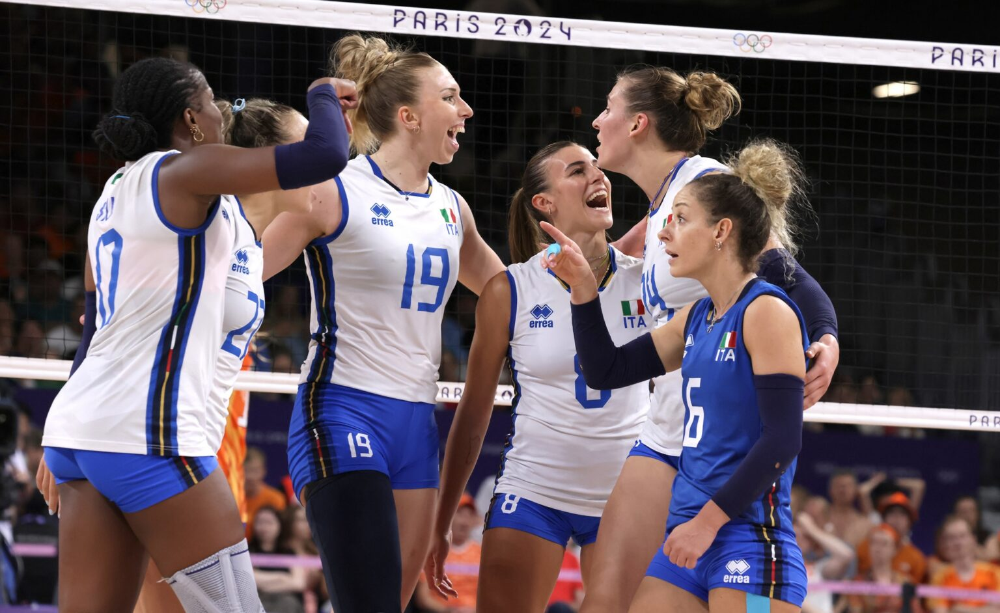
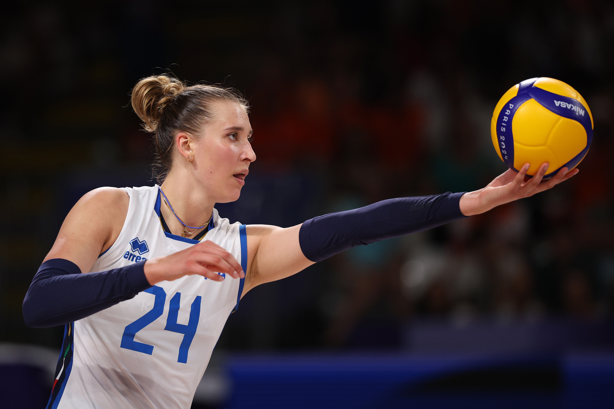

Quarti di finale: Italia - Serbia
Dopo una fase a gironi quasi perfetta, l’Italia è arrivata ai quarti di finale contro la Serbia. Questa era una delle partite più importanti del torneo, perché da qui in poi ogni errore poteva costare l’eliminazione.
La Serbia era un’avversaria esperta e pericolosa. In passato aveva spesso creato problemi all’Italia nelle grandi competizioni, quindi questa gara aveva anche un peso mentale molto forte.
Le Azzurre hanno vinto 3-0 con parziali di 26-24, 25-20 e 25-20. Il primo set è stato il più delicato, mentre nei due successivi l’Italia ha gestito meglio la partita e ha conquistato una semifinale olimpica storica.
Risultato
| Partita | Risultato |
|---|---|
| Italia - Serbia | 3-0 |
Parziali: 26-24, 25-20, 25-20.
Il primo set: il momento più difficile
Il primo set è stato quello più combattuto. La Serbia ha provato subito a mettere pressione all’Italia, soprattutto con la qualità delle sue attaccanti. Le Azzurre però sono rimaste dentro la partita, anche quando il punteggio era molto equilibrato.
Il 26-24 finale è stato uno dei passaggi decisivi della gara. Vincere un set ai vantaggi in un quarto di finale olimpico significa riuscire a rimanere lucide proprio nei punti più pesanti.
Questo primo parziale ha dato fiducia all’Italia. Dopo averlo conquistato, la squadra ha giocato con più sicurezza, mentre la Serbia ha iniziato a perdere continuità.


La crescita dell’Italia nel secondo e terzo set
Dopo il primo set, l’Italia ha preso maggiore controllo della gara. I parziali di 25-20 e 25-20 mostrano una squadra più ordinata e meno esposta agli errori.
La differenza non è stata solo nell’attacco. L’Italia ha lavorato bene in difesa, ha usato il muro per rallentare i colpi della Serbia e ha ricostruito molte azioni con pazienza.
Paola Egonu ha chiuso la partita con 19 punti, confermandosi un riferimento offensivo importante. Anche Bosetti, Danesi, Fahr, Sylla e Antropova hanno dato un contributo utile alla squadra.
Una vittoria dal valore storico
Il successo contro la Serbia ha avuto un significato enorme. L’Italia femminile non aveva mai superato i quarti di finale alle Olimpiadi: questa vittoria ha portato le Azzurre per la prima volta in semifinale olimpica.
Dopo la partita, Velasco ha mantenuto un atteggiamento molto concreto, ricordando che fino a quel momento l’Italia aveva perso un solo set, ma che nulla era ancora deciso. Questo modo di ragionare ha aiutato la squadra a non accontentarsi.
La vittoria per 3-0 non è stata quindi solo un risultato sportivo, ma un passaggio mentale importante. L’Italia ha dimostrato di saper reggere una partita da dentro o fuori e di poter puntare davvero alla medaglia.
